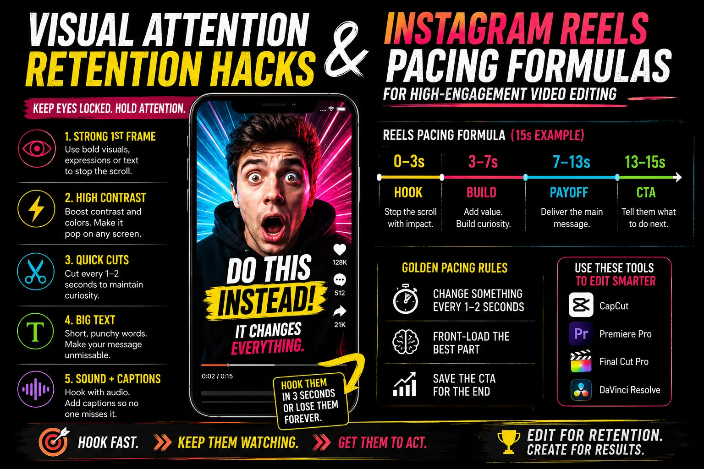
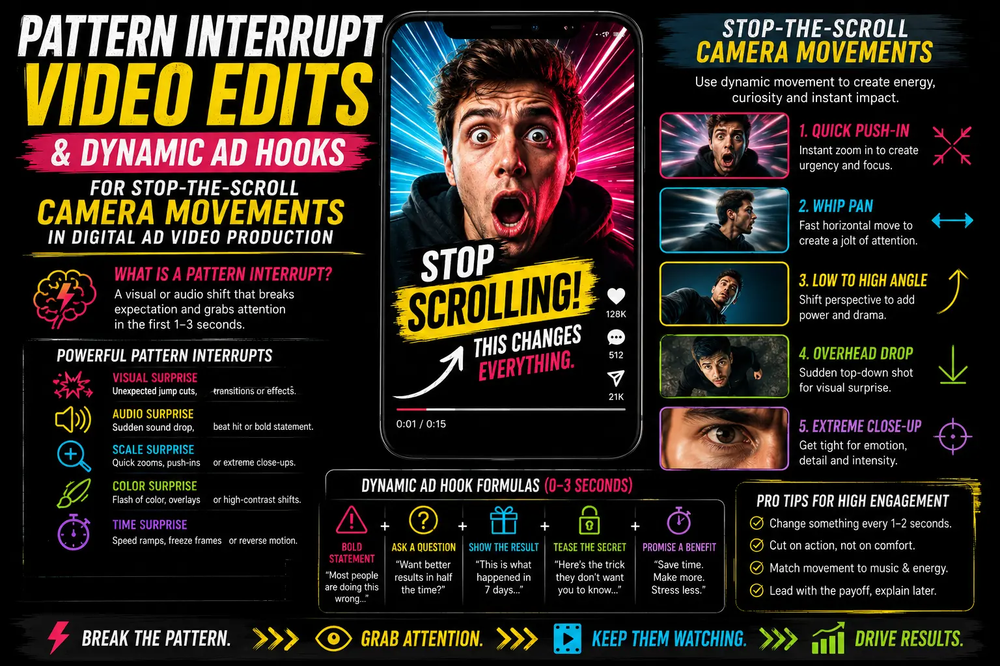

The 3-Second Hook — Visual Composition Frameworks That Stop the Scroll on Short-Form Video Feeds
Three Seconds to Survive: The Attention Economics of Vertical Video
The average viewer on Instagram Reels, YouTube Shorts, or TikTok makes their watch-or-scroll decision in approximately 1.5 to 3 seconds. That is not an editorial guideline — it is a neurological fact. The brain's visual processing system evaluates the incoming video stimulus against its learned model of "content worth watching" and generates either an engagement response (continue watching) or a dismissal response (scroll to next) in the time it takes to read this sentence.
Three seconds. Not three seconds to tell your story, build your argument, or establish your brand. Three seconds to prove that the next thirty seconds are worth the viewer's irreplaceable attention. If the opening visual fails to trigger engagement within this window, nothing else matters — not the brilliant middle, not the satisfying payoff, not the compelling call to action — because the viewer never reaches any of it.
Short-form video content slicing, visual attention retention hacks, and high-engagement video editing are the production and post-production disciplines that engineer the first three seconds of short-form video to stop the scroll — using specific visual composition frameworks, camera movements, editing techniques, and psychological triggers that override the viewer's default scroll behaviour and force attentional engagement.
The Neuroscience of the Scroll: Why Three Seconds Is the Threshold
Understanding why three seconds is the critical threshold requires understanding how the brain processes visual information in scrolling video feeds.
- The orienting response: attention's gatekeeping mechanism. The orienting response is the brain's automatic reaction to novel, unexpected, or potentially significant stimuli — a rapid, involuntary shift of attention toward the new stimulus that momentarily overrides ongoing cognitive processes. In a scrolling video feed, each new video triggers a brief orienting response as the brain evaluates the new visual input. If the video's opening presents stimuli that the brain categorises as novel, unexpected, or visually significant, the orienting response sustains — holding attention for the critical seconds needed to establish engagement. If the opening presents stimuli that the brain categorises as familiar, predictable, or visually unremarkable, the orienting response collapses — and the thumb completes the scroll.
- Visual saliency processing: what the eye sees first. The brain's visual saliency system pre-attentively identifies the most visually significant elements in any scene — bright colours, high contrast, motion, human faces, and pattern breaks — within approximately 150–250 milliseconds of exposure. This saliency processing determines where the eye looks first and whether the visual input is flagged as worthy of sustained attention. Visual attention retention hacks work by engineering the opening frame of the video to contain high-saliency elements that capture the saliency processing system before the conscious scroll decision is made.
- Prediction error: the curiosity trigger. The brain constantly generates predictions about what it will see next — and when the actual visual input violates these predictions (a prediction error), the brain allocates additional attention to resolve the discrepancy. Pattern interrupt video edits exploit this mechanism by opening with visual content that the brain cannot predict from the context of the feed — unexpected motion, unusual compositions, surprising scale, or perceptually impossible visual events — creating prediction errors that force sustained attention.
- The two-stage attention model. Attention in video viewing operates in two stages: an involuntary, automatic first stage (the orienting response — approximately 0–2 seconds) and a voluntary, controlled second stage (the engagement decision — approximately 2–4 seconds). The first stage is captured through visual saliency and novelty. The second stage is sustained through content relevance, narrative curiosity, or emotional engagement. Effective 3-second hooks address both stages: a visually striking opening captures involuntary attention, followed immediately by a content signal (the product, the question, the promise) that sustains voluntary attention.
Algorithmic Distribution
Platform algorithms use first-3-second retention as a primary distribution signal. Videos with high early retention receive exponentially broader distribution — meaning the 3-second hook directly determines the video's total reach and impression count, not just its engagement rate.
Completion Rate Amplification
Videos that successfully hook viewers in the first 3 seconds achieve dramatically higher completion rates — because the psychological commitment generated by the initial engagement decision sustains attention through the rest of the video, even through weaker sections.
Cost-Per-View Efficiency
For paid video advertising, the 3-second hook directly affects cost efficiency — higher retention reduces cost per completed view, cost per engagement, and cost per conversion, making every advertising rupee more efficient.
Brand Impression Quality
Even viewers who do not watch the complete video receive a brand impression during the 3-second hook. A visually striking, brand-consistent hook delivers a high-quality brand impression to every viewer who encounters it — including those who ultimately scroll past.

Stop-the-Scroll Camera Movements: The Production Toolkit
Stop-the-scroll camera movements are camera techniques specifically designed to produce motion characteristics that the viewer's brain cannot categorise as familiar video content — triggering the orienting response that overrides the scroll impulse.
- The rapid orbital reveal. The camera orbits rapidly around the product from behind, revealing the product face in a smooth, fast arc. The orbital motion itself is the hook — it produces a kinetic energy that the brain processes as visually significant — and the product reveal at the end of the orbit provides the content signal that sustains attention into the engagement decision phase.
- The macro-to-wide pull. The video opens on an extreme close-up — a texture, a detail, a material surface so magnified that it is initially unidentifiable. Within the first two seconds, the camera rapidly pulls back (or a zoom transition reveals) the full product in context. This technique exploits the brain's curiosity drive: the unidentifiable opening creates a prediction error, and the pull-back provides the resolution that rewards sustained attention.
- The speed-ramped sweep. A camera sweep that begins in extreme slow motion (the first 1–2 seconds play at 10–25% speed) and then accelerates to full speed or beyond — creating a kinetic energy shift within the opening seconds that the brain processes as temporally unusual. The speed ramp produces a visceral energy change that functions as both a visual and a temporal pattern interrupt.
- The impossible transition. The camera appears to pass through a solid surface, a liquid, or a physical barrier — emerging on the other side to reveal the product or scene. This spatial impossibility forces extended visual processing (the brain attempts to resolve the impossible spatial event) and produces the novelty signal that sustains attention. Achieved through masked transitions, split-screen compositing, or physical production techniques (passing through a frame or curtain).
- The overhead drop-in. The camera descends from directly above at speed, decelerating to a precise stop above the product composition. The downward motion direction is unusual enough to trigger attention (most video uses horizontal or static compositions), and the deceleration creates a moment of visual resolution that naturally leads the eye to the product.
Instagram Reels Pacing Formulas: Platform-Specific Editing
Instagram Reels pacing formulas are editing rhythms optimised for the specific audience behaviour, algorithmic priorities, and content consumption patterns of the Instagram platform.
The Visual Impact Formula
- Seconds 0–1: High-saliency opening frame — saturated colour, extreme motion, or visual surprise
- Seconds 1–3: Rapid visual variety — 2–3 cuts establishing the product, brand, or subject
- Seconds 3–10: Core content delivery with cuts every 1–2 seconds maintaining visual energy
- Final 2–3 seconds: Call to action or loop point that encourages replay
YouTube Shorts Retention Framing
- Seconds 0–2: Promise or question that creates curiosity — "Here's why..." or visual problem setup
- Seconds 2–5: Context establishment with moderate pacing (1.5–3 second shots)
- Seconds 5–15: Progressive content delivery with mini-payoffs every 5–7 seconds
- Final 3–5 seconds: Satisfying payoff that rewards complete viewing and encourages replay
TikTok Native Pacing
- Seconds 0–1: Immediate content start — no intros, no logos, directly into the hook
- Seconds 1–3: Fastest cut rhythm of all platforms — visual information density is key
- Seconds 3–12: Content delivery synced to trending audio pacing and platform conventions
- Final moments: Loop-friendly ending that seamlessly connects to the opening frame
Pattern Interrupt Video Edits: Post-Production Techniques
Pattern interrupt video edits are post-production techniques that create visual novelty, temporal disorientation, and perceptual surprise within the edit — generating the prediction errors that sustain attention beyond the initial hook.
- Jump cuts with purpose. Strategic jump cuts — abrupt transitions that skip time or change angle within a single continuous action — create a staccato visual rhythm that maintains attention through constant visual refreshment. Unlike smooth, continuous footage that the brain can process on autopilot, jump cuts force active visual processing at every transition point. For product videos, jump cuts between different angles of the same product action (a pour, an application, a reveal) create kinetic energy from simple product demonstrations.
- Speed ramping within edits. Alternating between slow-motion and real-time (or accelerated) playback within a single sequence creates temporal variation that the brain processes as visually significant. A product being placed in slow motion that suddenly snaps to real speed when it contacts the surface — or a fast-paced sequence that drops into slow motion for a single dramatic moment — creates the temporal pattern interrupts that sustain attention through longer content.
- Audio-visual synchronisation peaks. Precise synchronisation of visual transitions with audio beats, sound effects, or musical accents creates satisfying audio-visual moments that the brain registers as intentional and skilled — producing a quality signal that sustains engagement. Dynamic ad hooks that sync product reveals, camera movements, or transition effects to audio beats generate significantly higher completion rates than unsynchronised edits.
- Text and motion graphics integration. On-screen text that appears in rhythm with the edit — bold, animated typography that reinforces key messages, labels products, or adds commentary — provides a secondary attention channel that maintains engagement even when the visual content alone might not sustain it. High-engagement video editing treats text as a visual element with its own animation, timing, and compositional role — not just a subtitle overlay but an integrated design element that contributes to the video's overall visual energy.

Short-Form Video Content Slicing: From Long-Form to Hook-Optimised Clips
Short-form video content slicing — the extraction and reformatting of short-form clips from longer video productions — requires a hook-first approach that identifies and leads with the highest-impact visual moments from the source material.
- Hook moment identification. The first step in content slicing is identifying the moments in the source footage that have the highest hook potential — visually striking moments, surprising reveals, dramatic product interactions, powerful statements, or emotionally resonant scenes that can serve as the opening seconds of a standalone short-form clip. The most effective slicing approaches start by cataloguing hook moments rather than narrative segments.
- Non-linear restructuring. Short-form clips sliced from long-form content should not necessarily follow the narrative order of the source material. The most compelling moment should lead — even if it occurs in the middle or end of the source footage — followed by context and resolution. This non-linear restructuring prioritises the 3-second hook over narrative chronology, ensuring that the strongest visual moment is positioned where it has the greatest impact: the opening.
- Format-specific reframing. Content shot in horizontal format for long-form distribution must be reframed for vertical (9:16) presentation. This reframing is not just a crop — it requires compositional re-evaluation to ensure that the most important visual elements are positioned within the vertical frame's constraints, that the product remains the focal point, and that the vertical composition has its own visual integrity rather than looking like a cropped section of a wider frame.
- Pacing re-edit for platform conventions. Long-form content typically uses slower pacing (longer shots, more gradual transitions) than short-form platforms reward. Sliced content should be re-edited to match platform-specific pacing expectations — faster cuts, tighter timing, and the elimination of any moment that does not actively contribute to the clip's engagement value. Digital ad video production that plans for both long-form and short-form output during the production phase captures the coverage needed for platform-specific pacing without requiring additional shooting.
Dynamic Ad Hooks: The Commercial Application
Dynamic ad hooks apply the 3-second hook framework specifically to paid video advertising — where the commercial stakes of the hook are directly measurable in cost-per-view, engagement rate, and conversion performance.
- Product-first hooks. For direct response advertising, the product should be visible within the first second — positioned as the visual centrepiece of the hook rather than revealed after a narrative setup. The hook's visual spectacle (motion, colour, composition) surrounds and elevates the product rather than delaying its appearance. This product-first approach ensures that even viewers who scroll past after 2–3 seconds have received a product impression.
- Benefit-forward hooks. For consideration-stage advertising, the hook should demonstrate or visualise the product's primary benefit within the opening seconds — showing the transformation, the result, or the experience that the product delivers, followed by the product itself as the solution. This benefit-forward structure hooks the viewer with the outcome they desire before introducing the product that delivers it.
- A/B testing hook variants. The 3-second hook should be the primary variable in video ad A/B testing — testing multiple opening sequences (different camera movements, different colour treatments, different compositional approaches) on the same core content to identify which hook technique produces the highest retention and conversion rates for the specific product category and audience.
- Hook-body-CTA architecture. The complete short-form ad follows a three-part architecture: hook (seconds 0–3, capturing attention), body (seconds 3–12, delivering the message and building desire), and CTA (final seconds, directing the viewer to action). Each section has its own production and editing requirements, but the hook is the gatekeeper — if it fails, the body and CTA never reach the viewer.
Conclusion
Short-form video content slicing, visual attention retention hacks, high-engagement video editing, Instagram Reels pacing formulas, YouTube Shorts retention framing, pattern interrupt video edits, and stop-the-scroll camera movements are the production and editing disciplines that engineer the most commercially critical three seconds in digital marketing — the opening hook that determines whether your content is seen or scrolled past.
The creative investment in the 3-second hook is the highest-leverage production decision available in short-form video. Every rupee spent on content that fails the 3-second test is a rupee spent on content that the algorithm will not distribute, the audience will not see, and the brand will not benefit from. Dynamic ad hooks engineered with precision composition, strategic camera movements, and platform-specific pacing ensure that your content survives the only test that matters: the three seconds between the viewer's scroll and their decision to watch.
At The PhD Ads in Madurai, we produce short-form video content slicing, high-engagement video editing, pattern interrupt video edits, and stop-the-scroll camera movements for brands ready to win the 3-second hook — digital ad video production engineered to stop the scroll and hold the attention your product deserves.
Key Topics
Ready to Win the 3-Second Hook?
At The PhD Ads in Madurai, we produce short-form video content slicing, high-engagement video editing, and stop-the-scroll camera movements for brands ready to engineer the opening seconds that determine whether your content is seen — digital ad video production built to stop the scroll.
Email: team@e2o.in